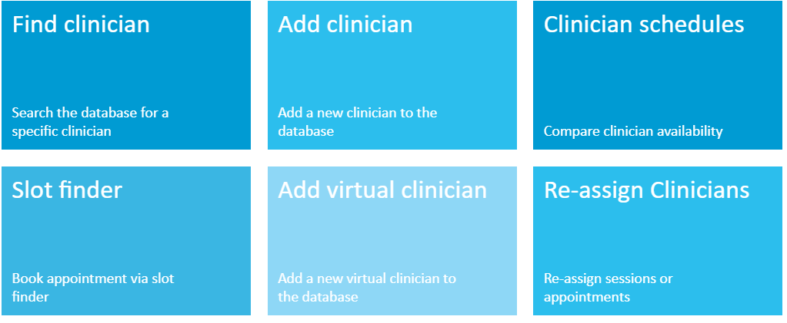
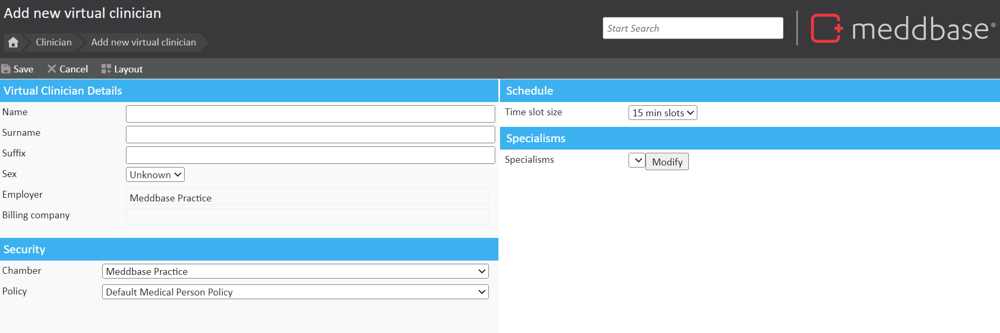
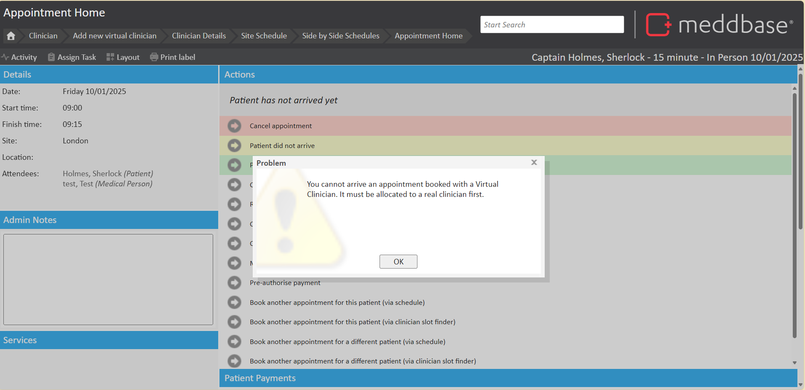
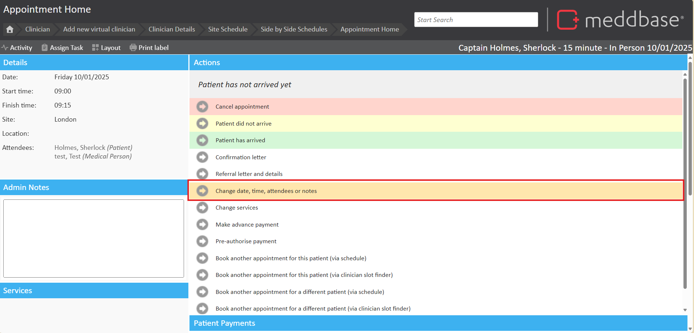
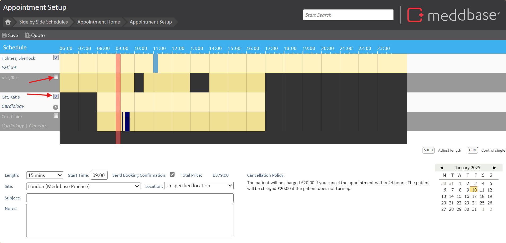

In situations where appointments need to be scheduled but the clinician is not yet known, Meddbase offers the concept of 'Virtual Clinicians'. These placeholders allow sessions and appointments to be created and reassigned later to an actual clinician.
This article explains how to add a Virtual Clinician in Meddbase and use them for scheduling and booking appointments.
A virtual clinician can be added to your system simply by navigating to Start Page > Clinician > Add Virtual Clinician

These clinicians allow you to create site sessions and book appointments as with a regular clinician. These appointments and sessions can then be easily reassigned to a real individual at a later date.
The 'Add virtual clinician' page contains the most basic demographic information, such as:
The information is required in order to work in tandem with the filters on the slot finder.

Once the information is captured, your new 'Virtual' clinician can have availablity to be scheduled and appointments booked like a standard clinician.
You cannot Arrive and complete an appointment where a Virtual Clinician is still an attendee. You will need to change the attendee to a Non-Virtual Clinician in order to arrive the patient and complete the appointment.

To change the attendee from a virtual clinician to a real clinician, on the Appointment Home page, click "Change date, time, attendees or notes"

You will be taken to the Appointment Setup page. You will need to untick the Virtual Clinician to remove them as an attendee and tick the appropriate attendee. This will allocate this appointment to the new attednees diary. Once done, click save and the attendees will be modified and the appointment can now be arrived.
